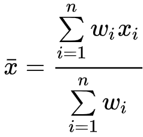
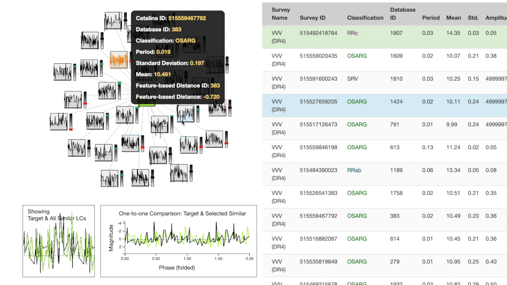

Visual Analytics for Astronomy Time Series Analysis
Nicholas Ruta
Why does this matter?
Astronomy surveys contain millions of objects. Significant time requirement to do manual classification. Many stars remain unclassified. Stars are represented as a time series. In order to make new discoveries, we will need scalable Astroinformatics systems.
Happens way too often
A large breach in health data in America occurs on average more than once per day.
US Department of HHSAffects all of us
More than 8.9 billion health records have been breached in the past 14 years alone.
Download the DataOften easily avoidable
The US Secret Service estimates that 96% of breaches are avoidable through simple or intermidate controls.
Data Breach Investigations ReportMaybe a story will bring light to the gravity of this issue...

Meet Nathan.
Nathan is a middle-aged man living in the United States. He has worked since graduating college and likes to dabble in pottery and d3.js blogs in his free time. Nathan recently found it he has liver cancer and has been going to the hospital frequently for treatment.
We used data from two Astronomy Surveys.
The Catalina Sky Survey (CSS) is a NASA funded project that involves searches for rapidly moving Near Earth Objects (NEOs)
The VVV Survey data products offer a unique dataset to map the stellar populations in the Galactic bulge and the adjacent plane.

An unlikely threat.
One day, Nathan receives a letter from his health insurance company, Anthem, asking about his plan coverage with a "priority code" on the outside of the envelope. While seemingly harmless, the "code" is made up of Nathan's social security number plus two additional digits. This leaves Nathan's sensitive information associated with his Social Security number exposed to anyone aware of Anthem's mistake.
Kernelized Cross-Correlation Distance Metric
We use a kernelized cross-correlation distance metric to compare light curves (astronomy time series) based on their morphology. We pre-process the light curves by folding them based on their period and using interpolation and standardizing to produce evently spaced observations on a similar scale. Finally, we compute and maximize the distance between two light curves with a kernelized cross-correlation score using phase shifting.
- Raw Data
- Fold the light curve
- Interpolate
- Standardize
- Compute Cross-Correlation
- Compute Kernelized Correlation as a Disatnce Measure
Feature-based Distance Metric
Using the feature space of our time-series data, we can compute the weighted arithmetic mean as a distance metric. The feature space provides a scalable way to explore large time series databases. It allows us to enhance our similarity searches and identify interesting observations using a potentially lower-dimensional space. We can select weighted features based on a specific profile to encourage the search results.
- Calculate the weighted arithmetic mean as the
- sum of the product of
- the individual assigned weights (w)
- and corresponding features (x)
- for each time series feature (n),
- divided by the sum of all the weights (w)
A purchase.
While Nathan attempts to remedy his situation, his personal information is collected by South Carolina (the state he resides in). South Carolina in turn can sell this data to interested buyers, including WebMD Health, Truven Health Analytics, and Milliman, for over $53,000.

Feature-based Search
We use parallel coordinates to explore the feature space of the databse where each column represents a feature. Different ranges can be selected to explore & isolate examples with which a similarity search can be based on.
Try it live (click the "Explore the Data" button)
An attack on the homefront.
As Nathan worries about the dispersal of his private information on his cancer treatments, he moves to using his personal smartphone instead to keep track of medicine, procedures, and his daily fitness routines. From Apple Health on his iPhone to Fitbit on his wrist, Nathan feels secure that his health data is kept close to him (literally). Little does he know...

Fine-tuned Results
First, select the features important for your desired search profile. Next, decide whether to compute similarity metrics using the standardized or non-standardized version of the light curves. Finally, search for the most similar in the database using a specific observation.
Try it live
Visual Analytics
The "target" light curve (which the search was based on) is shown in green. The left half of the screen contains a search results cluster at the top. The target is at the center, closer nodes are more similar based on the cross-correlation metric. Each node in the cluster has a bar to the right which expresses feature space distance to the target.

Below the cluster, a one-to-many comparison chart shows the target's overall shape compared to the top 30 most similar in the database. To the right, a one-to-one comparison is plotted showing the target directly compared to the most recently hovered objectfrom the cluster.
The right half of the screen is a table of the feature space for the 30 most similar observations in the database. The most recently hovered node on the cluster is highlighted in blue on the table while the most recently hovered row on the table is highlighted in orange on the cluster.
You can click a node on the cluster or a row on the table to search with that observation as the new target.
Try it live (click "Get Time Series")
Visual Analytics for Astronomy Time Series Analysis
We built this time series search engine application to enable a search based on a target and find similar time series in a database. We demonstrated its capabilities using two astronomy light curve surveys. To allow scientists to explore and isolate interesting examples, we provided parallel coordinates to probe the feature space and a visual analytics dashboard to interact with search results. Further, new light curves of interest can be selected for a new similarity search.
Future Work
healthIT.gov can help you file a complaint if you believe your health information privacy has been violated. You can keep up to date on healthcare data privacy issues. Also, you can update privacy settings on apps provided by companies such as Facebook and Google.
References
Data Sources
Publications
1 Kernels for Periodic Time Series Arising in Astronomy
2 FATS: Feature Analysis for Time Series
3 P4J